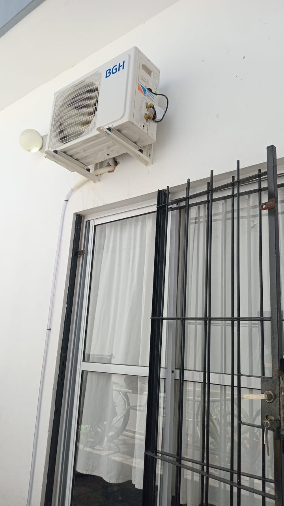
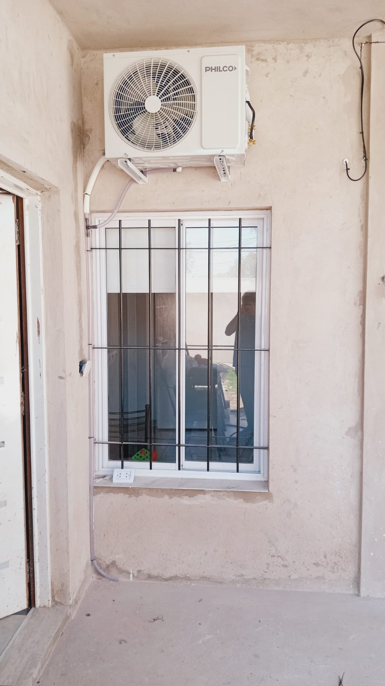
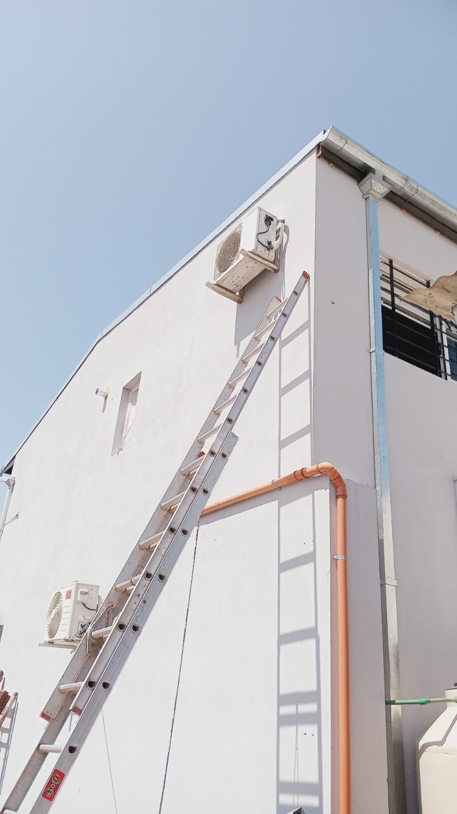
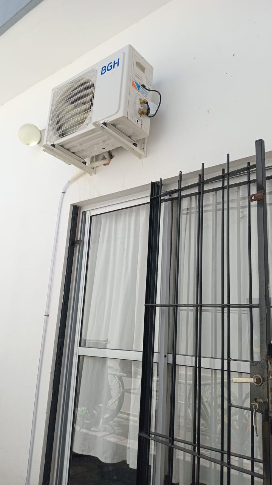
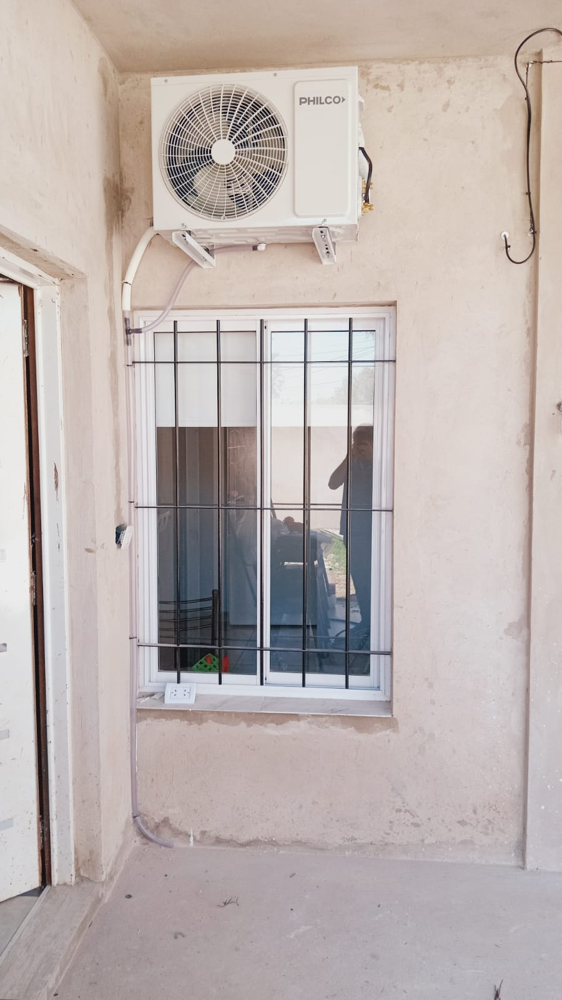
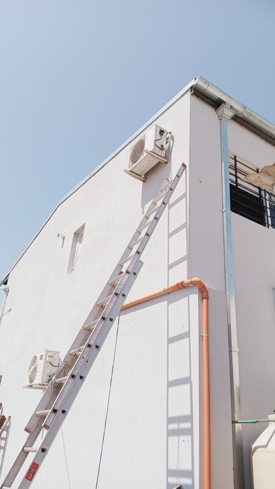

Service Castelar
Instalación y reparación de aires acondicionados · Heladeras familiares y comerciales · Lavarropas automáticos

Contactar por WhatsApp
Instalación y reparación de aires acondicionados · Heladeras familiares y comerciales · Lavarropas automáticos
En Service Castelar nos especializamos en brindar soluciones técnicas con responsabilidad y compromiso. Ofrecemos reparación de lavarropas automáticos de todas las marcas, instalación y reparación de aires acondicionados split, reparación de heladeras familiares y comerciales, y servicio técnico especializado en refrigeración comercial. Contamos con más de 25 años de experiencia brindando servicios de calidad a clientes de Zona Oeste y Gran Buenos Aires.
En Service Castelar brindamos soluciones técnicas confiables, adaptadas a cada necesidad.
 





“Excelente servicio, muy recomendados.”
– Marcela, Bella Vista
“Recomiendo totalmente, muy buena atención.”
– Cristian, San Miguel
“Confiables y puntuales. Ya los llamé más de una vez.”
– Lorena, José C. Paz
No importa el modelo: ofrecemos soluciones técnicas precisas y confiables, con el respaldo de más de 25 años de experiencia.
Teléfono / WhatsApp: 1169598282
Email: acostacarlosandres919@gmail.com
Zona de trabajo: Gran Buenos Aires
Horario: Lunes a Sábado de 08:00 a 18:00 hs